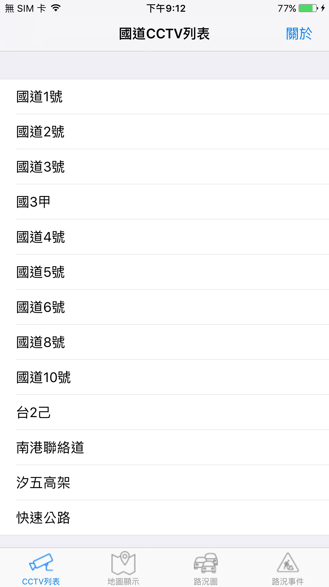
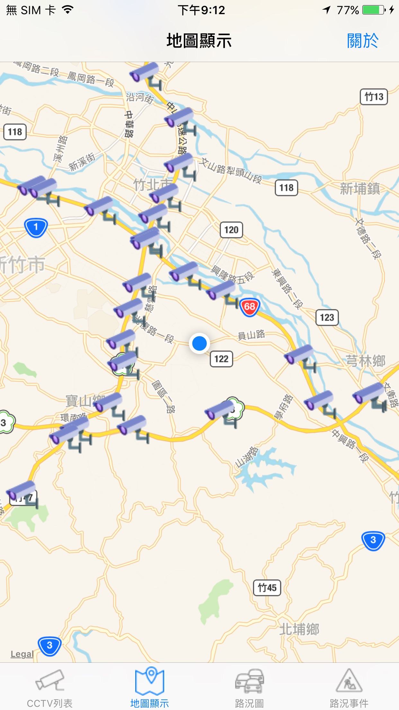
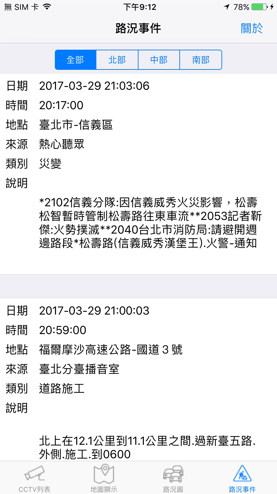

國道即時路況 Freewaylive
本App分別以列表及地圖方式顯示高速公路即時影像。並提供(北部, 中部, 南部)道路即時事件以供使用者使用。
本App使用台灣政府開放資料開放平台(http://data.gov.tw/)資料，本App只顯示並無儲存圖片及影像的功能。
本App不收費。
本App使用的icon來自http://www.flaticon.com及https://icons8.com。
iOS App
螢幕截圖



App Store 連結
國道即時路況 Freewaylive
聯絡作者 / Contact me